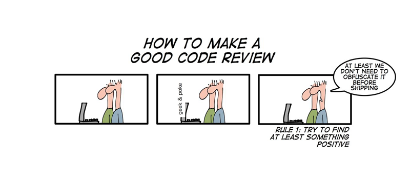

Design Reviews, Code Walks

The pedagogical goal of a design review/code walk in Software Development is to practice interactions between creators and readers of your design document/code.
The technical goal of these interactions is to discover questionable design decisions, mistakes, and omissions.
Introduce yourself.
Remind the readers of the task. State the technical goal of the review.
Start with an overview.
For code walks, consider usinga class diagram of the major components and their static relationships;
a interaction diagram that illustrates the major interactions among components.
Use these diagrams only if you think they help readers.Present the components and their functionality in a top-down fashion, no matter how you designed and implemented them. Refine as the panel requests.
the presentation suggestions from above;
the clear desire to work with the panel on the most difficult parts of the project. For example, a presenter should never ask "what do you want to see next".
the presenter’s ability to work with the panel in an interactive manner. In particular, a presenter should never discuss problems abstractly but always direct the attention of the panel to concrete pieces of design documents, comments, or lines of code.
the presenter must know when to acknowledge a potential problem in the code and, equally important, must realize when it is time to reject criticism. Consider a coding problem. In this case, a presenter may wish to work through a test scenario to understand why code may fail on a specific kind of input or sequence of calls etc. Similarly, for an architectural complaint, a presenter must use existing drawings in files or drawings on the blackboard to work through a scenario. What-if scenarios are a particularly good way to assess architectural problems.
the presenter is in obvious command of all the code, even though the code is created in pair-programming sessions. Thus, a presenter should never have to ask his colleague for advice and a colleague should never have to jump in.
head reader; as such you are responsible to keep the presentation on track;
assistant reader; you and the head reader find mistakes, omissions, and questionable design decisions;
secretary; you keep track of the questions that the readers ask, notes discoveries of problems, takes notes, and summarizes the to-do items as a memo.
OK+ means the reader discovers solid problems and articulates them well. This appears to depend on the quality of the code basis. Because all code bases are somewhat flawed, however, the quality of the presented code doesn’t really affect your ability to get this grade.
OK means the reader asks pertinent questions and discovers some problems.
OK- means the reader asks questions and some of them are pertinent.
ZERO means the reader didn’t ask any questions or asked too few questions pertinent to the code/design at hand.
When you are secretary you are responsible to get a copy of the written notes to Mr. Garnock-Jones within 12 24 hours. Once the report is acceptable, we will forward it to the reviewed pair; until then, we will request edits.
the presenters
the panelists
the title of the project presented
the date and time
a bullet list of problems discovered. Describes those problems in enough details so that the presenters can reconstruct it and fix it from the information specified.
If the panel discussed potential solutions with the presenters, include these suggestions with the appropriate bullet.
The evaluation of a memo will take into account the timely delivery of the first draft, its format, its information content, and basic English writing (typos, grammar mistakes). The latter will affect your grade in a serious manner if the mistake allows a misinterpretation of a sentence or if the mistake makes an interpretation extremely difficult.